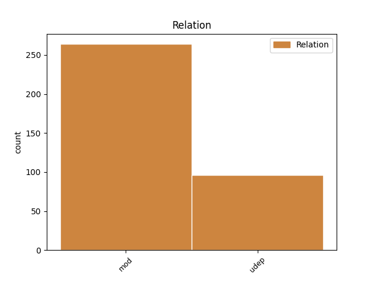
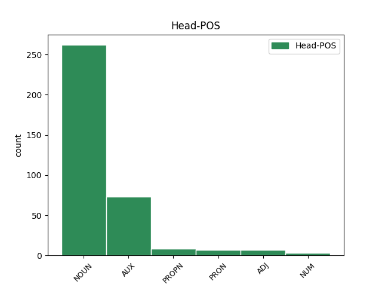

Distribution of features within this leaf


Agreement Rules sorted by frequency.
- When the dependent token is the modifer(mod) of the head token, and the head token is NOUN
1 Muhto _ _ _ _ 0 _ _ _
2 čohkkájin _ _ _ _ 0 _ _ _
3 ovtta okta NUM Num Case=Loc|Number=Sing|NumType=Card 4 mod _ _
4 sajis sadji NOUN N Case=Loc|Number=Sing 0 _ _ _
5 livttisin _ _ _ _ 0 _ _ _
6 gollan _ _ _ _ 0 _ _ _
7 duolba _ _ _ _ 0 _ _ _
8 geađggi _ _ _ _ 0 _ _ _
9 alde _ _ _ _ 0 _ _ _
10 ja _ _ _ _ 0 _ _ _
11 gehččen _ _ _ _ 0 _ _ _
12 čáhcái _ _ _ _ 0 _ _ _
13 . _ _ _ _ 0 _ _ _
1 Máidnasa _ _ _ _ 0 _ _ _
2 vuođđun _ _ _ _ 0 _ _ _
3 lea leat AUX V Mood=Ind|Number=Sing|Person=3|Tense=Pres|VerbForm=Fin 0 _ _ _
4 sápmelaččaid _ _ _ _ 0 _ _ _
5 árbevirolaš _ _ _ _ 0 _ _ _
6 mainnas _ _ _ _ 0 _ _ _
7 sarvvabivddus sarvvabivdu NOUN N Case=Loc|Number=Sing 3 udep _ SpaceAfter=No
8 , _ _ _ _ 0 _ _ _
9 mii _ _ _ _ 0 _ _ _
10 dáhpahuvai _ _ _ _ 0 _ _ _
11 aimmus _ _ _ _ 0 _ _ _
12 . _ _ _ _ 0 _ _ _
1 Agivuloš _ _ _ _ 0 _ _ _
2 mánná _ _ _ _ 0 _ _ _
3 gean _ _ _ _ 0 _ _ _
4 váhnemat _ _ _ _ 0 _ _ _
5 eai _ _ _ _ 0 _ _ _
6 eale _ _ _ _ 0 _ _ _
7 ovttas _ _ _ _ 0 _ _ _
8 , _ _ _ _ 0 _ _ _
9 oažžu _ _ _ _ 0 _ _ _
10 almmotge _ _ _ _ 0 _ _ _
11 eaiggáduššat _ _ _ _ 0 _ _ _
12 bohccuid _ _ _ _ 0 _ _ _
13 siidaoasis _ _ _ _ 0 _ _ _
14 sihke _ _ _ _ 0 _ _ _
15 eatni eadni NOUN N Case=Gen|Number=Sing 0 _ _ _
16 ja _ _ _ _ 0 _ _ _
17 áhči áhčči NOUN N Case=Gen|Number=Sing 15 udep _ _
18 bealde _ _ _ _ 0 _ _ _
19 . _ _ _ _ 0 _ _ _
1 Stuorra _ _ _ _ 0 _ _ _
2 Sarva Sarva PROPN N Case=Nom|Number=Sing 0 _ _ _
3 bivddus bivdu NOUN N Case=Loc|Number=Sing 2 mod _ SpaceAfter=No
4 . _ _ _ _ 0 _ _ _
1 Ovlla _ _ _ _ 0 _ _ _
2 lea _ _ _ _ 0 _ _ _
3 rikkis rikkis ADJ A Case=Nom|Number=Sing 0 _ _ _
4 , _ _ _ _ 0 _ _ _
5 Biera _ _ _ _ 0 _ _ _
6 lea leat AUX V Mood=Ind|Number=Sing|Person=3|Tense=Pres|VerbForm=Fin 3 mod _ _
7 riggát _ _ _ _ 0 _ _ _
8 ja _ _ _ _ 0 _ _ _
9 Heaika _ _ _ _ 0 _ _ _
10 lea _ _ _ _ 0 _ _ _
11 riggámus _ _ _ _ 0 _ _ _
12 . _ _ _ _ 0 _ _ _
1 Vákkiin _ _ _ _ 0 _ _ _
2 leat _ _ _ _ 0 _ _ _
3 ollu _ _ _ _ 0 _ _ _
4 váramat _ _ _ _ 0 _ _ _
5 , _ _ _ _ 0 _ _ _
6 sihke _ _ _ _ 0 _ _ _
7 Dálošvákkis Dálošvággi PROPN N Case=Loc|Number=Sing 0 _ _ _
8 ja _ _ _ _ 0 _ _ _
9 Olmmáivákkis Olmmáivággi PROPN N Case=Loc|Number=Sing 7 udep _ SpaceAfter=No
10 , _ _ _ _ 0 _ _ _
11 jus _ _ _ _ 0 _ _ _
12 lea _ _ _ _ 0 _ _ _
13 buorre _ _ _ _ 0 _ _ _
14 geassi _ _ _ _ 0 _ _ _
15 . _ _ _ _ 0 _ _ _
1 Na _ _ _ _ 0 _ _ _
2 gal _ _ _ _ 0 _ _ _
3 dii _ _ _ _ 0 _ _ _
4 dal _ _ _ _ 0 _ _ _
5 oažžubehtet _ _ _ _ 0 _ _ _
6 dan _ _ _ _ 0 _ _ _
7 beannot beannot NUM Num Case=Ill|Number=Sing|NumType=Card 8 mod _ _
8 čuohtái čuohti NUM Num Case=Ill|Number=Sing|NumType=Card 0 _ _ _
9 , _ _ _ _ 0 _ _ _
10 go _ _ _ _ 0 _ _ _
11 juo _ _ _ _ 0 _ _ _
12 válddežehpet _ _ _ _ 0 _ _ _
13 . _ _ _ _ 0 _ _ _
1 - _ _ _ _ 0 _ _ _
2 Mun _ _ _ _ 0 _ _ _
3 gielddán _ _ _ _ 0 _ _ _
4 du _ _ _ _ 0 _ _ _
5 agibeaivvis _ _ _ _ 0 _ _ _
6 šat _ _ _ _ 0 _ _ _
7 deaivvadeamis _ _ _ _ 0 _ _ _
8 suinna son PRON Pron Case=Com|Number=Sing|Person=3|PronType=Prs 0 _ _ _
9 , _ _ _ _ 0 _ _ _
10 áhčči _ _ _ _ 0 _ _ _
11 šikkui šiggut VERB V Mood=Ind|Number=Sing|Person=3|Tense=Past|VerbForm=Fin 8 mod _ SpaceAfter=No
12 . _ _ _ _ 0 _ _ _
1 Mus _ _ _ _ 0 _ _ _
2 lea _ _ _ _ 0 _ _ _
3 dutnje don PRON Pron Case=Ill|Number=Sing|Person=2|PronType=Prs 4 udep _ _
4 juoga juoga PRON Pron Case=Nom|Number=Sing|PronType=Ind 0 _ _ _
5 dadjamuš _ _ _ _ 0 _ _ _
6 . _ _ _ _ 0 _ _ _
1 Ollu ollu ADJ A Case=Nom|Number=Sing 0 _ _ _
2 go _ _ _ _ 0 _ _ _
3 dus don PRON Pron Case=Loc|Number=Sing|Person=2|PronType=Prs 1 udep _ _
4 lea _ _ _ _ 0 _ _ _
5 ruhta _ _ _ _ 0 _ _ _
6 ? _ _ _ _ 0 _ _ _
Disagree Examples:
1 Guollebivdu guollebivdu NOUN N Case=Nom|Number=Sing 0 _ _ _
2 jogain johka NOUN N Case=Loc|Number=Plur 1 mod _ _
3 ja _ _ _ _ 0 _ _ _
4 jávrriin _ _ _ _ 0 _ _ _
5 . _ _ _ _ 0 _ _ _
1 Hans _ _ _ _ 0 _ _ _
2 A. _ _ _ _ 0 _ _ _
3 Oppstad _ _ _ _ 0 _ _ _
4 lei leat AUX V Mood=Ind|Number=Sing|Person=3|Tense=Past|VerbForm=Fin 0 _ _ _
5 sátnejođiheaddji _ _ _ _ 0 _ _ _
6 mu _ _ _ _ 0 _ _ _
7 Skuvvanári _ _ _ _ 0 _ _ _
8 álgojagiid álgojahki NOUN N Case=Gen|Number=Plur 4 udep _ SpaceAfter=No
9 . _ _ _ _ 0 _ _ _
1 Juos _ _ _ _ 0 _ _ _
2 Ipmil _ _ _ _ 0 _ _ _
3 lea _ _ _ _ 0 _ _ _
4 min mun PRON Pron Case=Gen|Number=Plur|Person=1|PronType=Prs 0 _ _ _
5 beale _ _ _ _ 0 _ _ _
6 , _ _ _ _ 0 _ _ _
7 gii _ _ _ _ 0 _ _ _
8 lea leat VERB V Mood=Ind|Number=Sing|Person=3|Tense=Pres|VerbForm=Fin 4 mod _ _
9 min _ _ _ _ 0 _ _ _
10 vuostái _ _ _ _ 0 _ _ _
11 ? _ _ _ _ 0 _ _ _
1 Leago _ _ _ _ 0 _ _ _
2 sámeálbmogis sámeálbmot NOUN N Case=Loc|Number=Sing 3 udep _ _
3 vuoigatvuođat vuoigatvuohta NOUN N Case=Nom|Number=Plur 0 _ _ _
4 vai _ _ _ _ 0 _ _ _
5 eai _ _ _ _ 0 _ _ _
6 ? _ _ _ _ 0 _ _ _
1 Leatgo _ _ _ _ 0 _ _ _
2 geavaheaddjis geavaheaddji NOUN N Case=Loc|Number=Sing 3 udep _ _
3 váttisvuođat váttisvuohta NOUN N Case=Nom|Number=Plur 0 _ _ _
4 buktit _ _ _ _ 0 _ _ _
5 áššiid _ _ _ _ 0 _ _ _
6 ovdan _ _ _ _ 0 _ _ _
7 ? _ _ _ _ 0 _ _ _